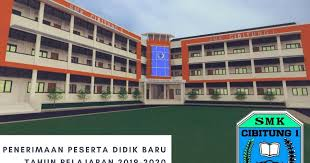

🫠Lantai 2 — SMK CIBITUNG 1
Lantai dua merupakan area utama kegiatan belajar siswa jurusan Teknik Motor (TM) dan jurusan lainnya. Dilengkapi ruang guru, ruang BK, dan laboratorium tambahan. Beberapa tangga di kiri dan kanan menghubungkan ke lantai 3.
🪜
Tangga Ujung Kiri
Tangga penghubung dari lantai 1 ke lantai 2, terletak di sisi kiri ujung bangunan.
🧰
Ruang Kelas Jurusan TM (5 Ruang)
Lima ruang kelas untuk jurusan Teknik Motor kelas 10, dilengkapi alat peraga dan papan tulis digital.
🚻
Toilet & Ruang BK
Toilet perempuan dan Ruang Bimbingan Konseling berada di tengah area TM, menyediakan tempat nyaman untuk konsultasi siswa.
🪜
Tangga Tengah ke Lantai 3
Tangga yang menuju ke lantai 3, terletak di antara ruang BK dan ruang guru.
👩‍🏫
Ruang Guru
Tempat para guru berkumpul, menyusun RPP, dan berdiskusi mengenai kegiatan belajar mengajar.
💻
Lab Komputer SIJA
Laboratorium komputer tambahan untuk siswa SIJA melakukan proyek jaringan dan server.
🏫
Kelas 11 TM & Lainnya
Ruangan kelas untuk siswa kelas 11 dari berbagai jurusan. Didesain luas dan berpendingin udara.
🪜
Tangga Kanan ke Lantai 3
Tangga di sisi kanan koridor yang menghubungkan langsung ke lantai 3.
🗺️ Denah Lantai 2
Berikut denah visual lantai kedua sekolah:
